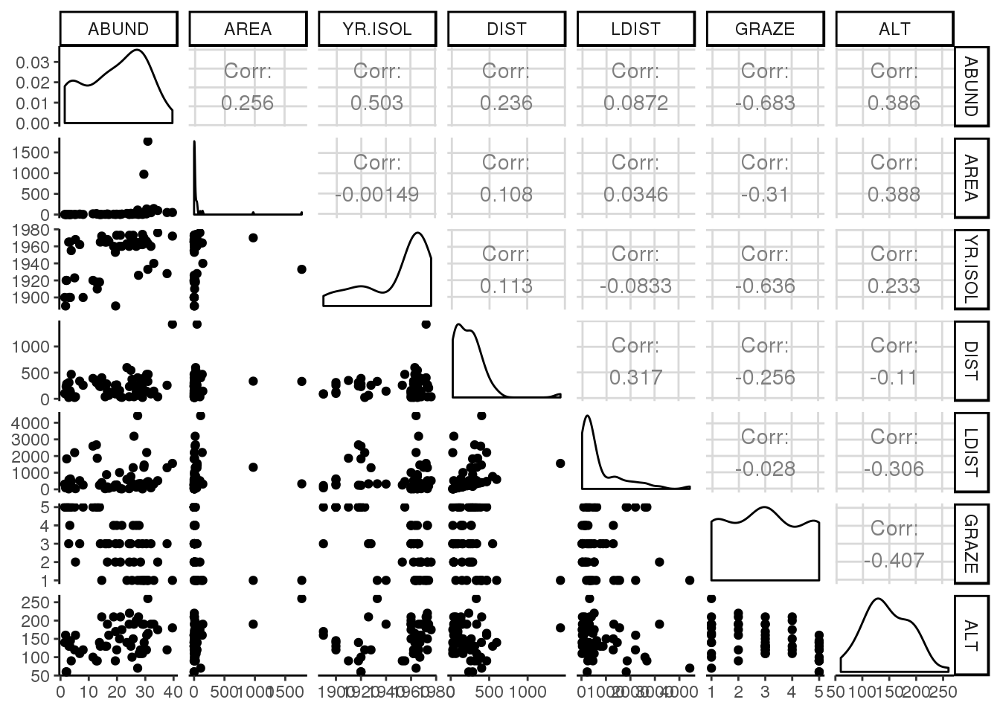
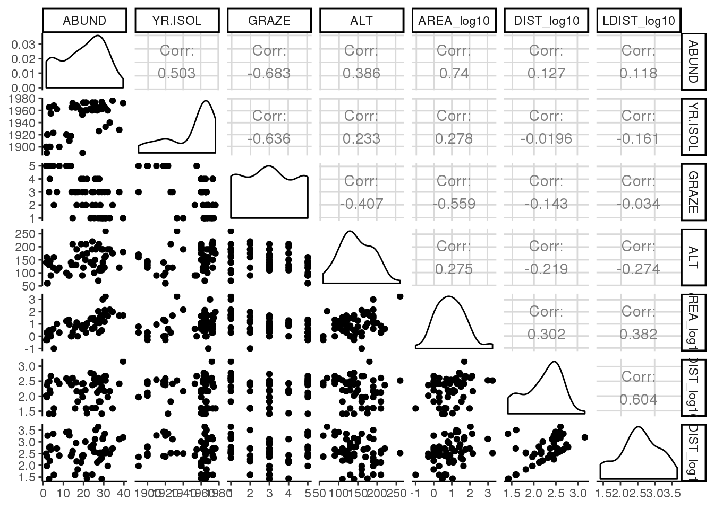
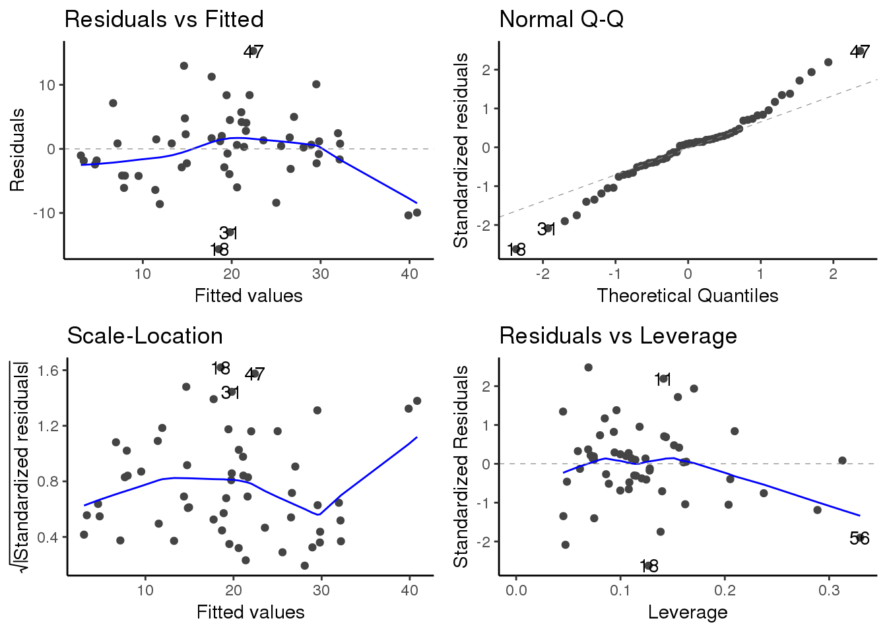
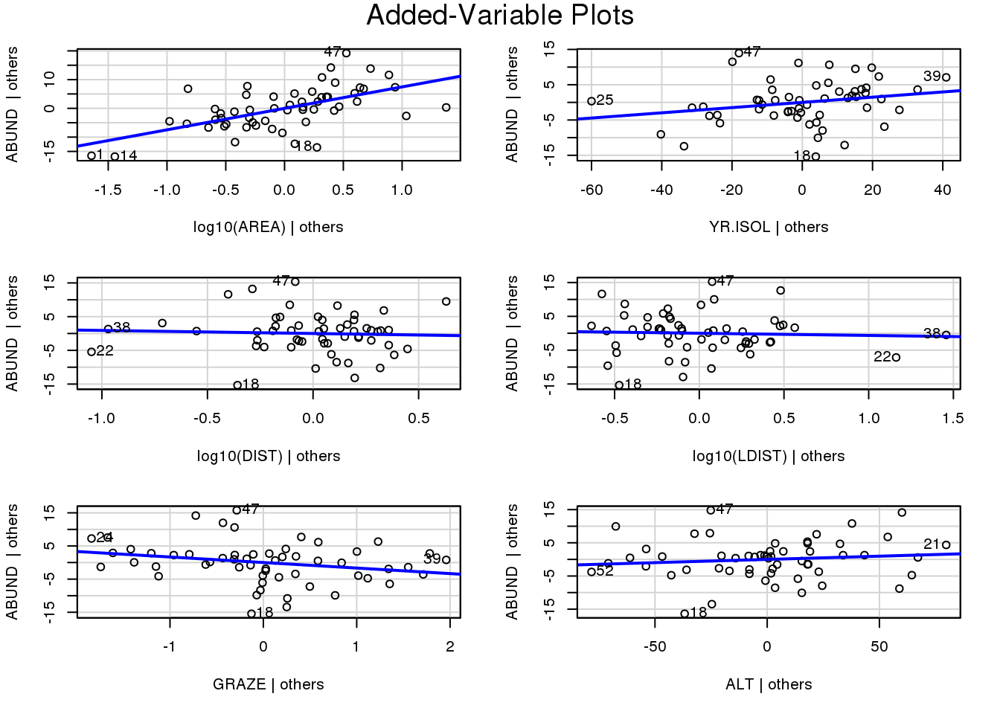
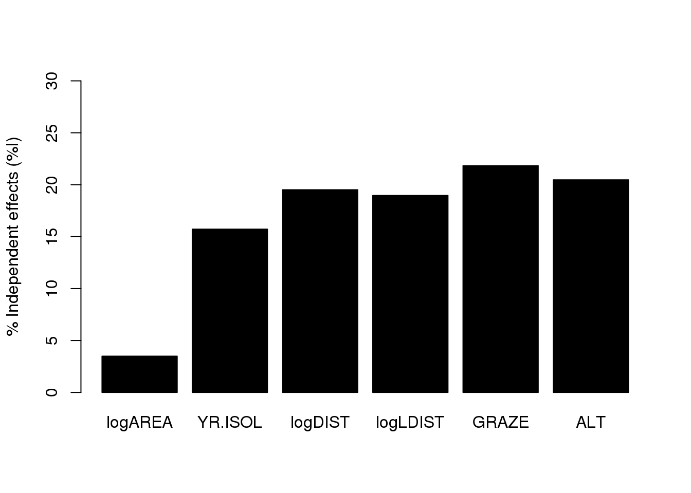

8.1 Demo A: Multiple Regression
8.1.1 Teil 1: Multiple Regressionen
Logan (2010 S. 224 ff)
library(tidyverse)
library(car)
library(GGally)
library(ggfortify)Datensatz loyn.csv einlesen.
###################################################
### chunk number 1: pg 224
###################################################
# loyn <- read.csv('loyn.csv', header=T, sep=',')
loyn <- read_csv("15_Statistik3/data/loyn.csv")###################################################
### chunk number 2: pg 225
###################################################
# scatterplotMatrix(~ABUND+AREA+YR.ISOL+DIST+LDIST+GRAZE+ALT, data=loyn, diag="boxplot")
GGally::ggpairs(loyn)
###################################################
### chunk number 3: pg 225
###################################################
# scatterplotMatrix(~ABUND+log10(AREA)+YR.ISOL+log10(DIST)+log10(LDIST)+GRAZE+ALT, data=loyn, diag="boxplot")
loyn %>%
mutate(
AREA_log10 = log10(AREA),
DIST_log10 = log10(DIST),
LDIST_log10 = log10(LDIST)
) %>%
dplyr::select(-AREA,-DIST,-LDIST) %>%
ggpairs()
###################################################
### chunk number 4: pg 226
###################################################
cor(loyn[,2:7])
## AREA YR.ISOL DIST LDIST GRAZE
## AREA 1.000000000 -0.001494192 0.1083429 0.03458035 -0.31040242
## YR.ISOL -0.001494192 1.000000000 0.1132175 -0.08331686 -0.63556710
## DIST 0.108342870 0.113217524 1.0000000 0.31717234 -0.25584182
## LDIST 0.034580346 -0.083316857 0.3171723 1.00000000 -0.02800944
## GRAZE -0.310402417 -0.635567104 -0.2558418 -0.02800944 1.00000000
## ALT 0.387753885 0.232715406 -0.1101125 -0.30602220 -0.40716705
## ALT
## AREA 0.3877539
## YR.ISOL 0.2327154
## DIST -0.1101125
## LDIST -0.3060222
## GRAZE -0.4071671
## ALT 1.0000000###################################################
### chunk number 5: pg 227
###################################################
vif(lm(ABUND~log10(AREA)+YR.ISOL+log10(DIST)+log10(LDIST) +GRAZE+ALT, data=loyn))
## log10(AREA) YR.ISOL log10(DIST) log10(LDIST) GRAZE
## 1.911514 1.804769 1.654553 2.009749 2.524814
## ALT
## 1.467937
1/vif(lm(ABUND~log10(AREA)+YR.ISOL+log10(DIST)+log10(LDIST) +GRAZE+ALT, data=loyn))
## log10(AREA) YR.ISOL log10(DIST) log10(LDIST) GRAZE
## 0.5231454 0.5540876 0.6043930 0.4975746 0.3960688
## ALT
## 0.6812282###################################################
### chunk number 6: pg 227
###################################################
# Added "na.action = "na.fail"" see https://stackoverflow.com/a/26437578/4139249
loyn.lm<-lm(ABUND~log10(AREA)+YR.ISOL+log10(DIST)+log10(LDIST)+GRAZE+ALT,data=loyn,na.action = "na.fail")###################################################
### chunk number 6: pg 227
###################################################
# plot(loyn.lm)
autoplot(loyn.lm)
###################################################
### chunk number 7: pg 228
###################################################
summary(influence.measures(loyn.lm))
## Potentially influential observations of
## lm(formula = ABUND ~ log10(AREA) + YR.ISOL + log10(DIST) + log10(LDIST) + GRAZE + ALT, data = loyn, na.action = "na.fail") :
##
## dfb.1_ dfb.l10(A dfb.YR.I dfb.l10(D dfb.l10(L dfb.GRAZ dfb.ALT dffit
## 18 0.00 -0.19 -0.08 0.45 0.47 0.06 0.41 -1.07
## 38 -0.01 -0.01 0.01 -0.04 0.05 0.00 0.02 0.06
## 47 0.35 0.33 -0.35 -0.10 0.07 -0.11 -0.26 0.72
## 56 -0.52 -0.75 0.57 -0.32 0.43 0.02 -0.53 -1.37_*
## cov.r cook.d hat
## 18 0.46_* 0.14 0.13
## 38 1.68_* 0.00 0.31
## 47 0.48_* 0.07 0.07
## 56 1.01 0.25 0.33###################################################
### chunk number 8: pg 228
###################################################
summary(loyn.lm)
##
## Call:
## lm(formula = ABUND ~ log10(AREA) + YR.ISOL + log10(DIST) + log10(LDIST) +
## GRAZE + ALT, data = loyn, na.action = "na.fail")
##
## Residuals:
## Min 1Q Median 3Q Max
## -15.6506 -2.9390 0.5289 2.5353 15.2842
##
## Coefficients:
## Estimate Std. Error t value Pr(>|t|)
## (Intercept) -125.69725 91.69228 -1.371 0.1767
## log10(AREA) 7.47023 1.46489 5.099 5.49e-06 ***
## YR.ISOL 0.07387 0.04520 1.634 0.1086
## log10(DIST) -0.90696 2.67572 -0.339 0.7361
## log10(LDIST) -0.64842 2.12270 -0.305 0.7613
## GRAZE -1.66774 0.92993 -1.793 0.0791 .
## ALT 0.01951 0.02396 0.814 0.4195
## ---
## Signif. codes: 0 '***' 0.001 '**' 0.01 '*' 0.05 '.' 0.1 ' ' 1
##
## Residual standard error: 6.384 on 49 degrees of freedom
## Multiple R-squared: 0.6849, Adjusted R-squared: 0.6464
## F-statistic: 17.75 on 6 and 49 DF, p-value: 8.443e-11
###################################################
### chunk number 9: pg 229
###################################################
avPlots(loyn.lm, ask=F)
8.1.2 Teil 2: Selecting the “best” regression model
Logan (2010 S. 237 ff)
library(MuMIn)
# Package biology wird von Logan nicht mehr weitergeführt und ist mit der aktuellen R Version nicht kompatibel
library(biology)
m<-Model.selection(loyn.lm)
Model.selection(loyn.lm)[[1]][1:45,c(2,5,6,7)]
loyn.lm.sel <- dredge(loyn.lm, rank = "AICc")
loyn.lm.getmodels <- get.models(loyn.lm.sel, subset = T)
loyn.lm.av <- model.avg(loyn.lm.getmodels)
summary(loyn.lm.av)
##
## Call:
## model.avg(object = loyn.lm.getmodels)
##
## Component model call:
## lm(formula = ABUND ~ <64 unique rhs>, data = loyn, na.action =
## na.fail)
##
## Component models:
## df logLik AICc delta weight
## 236 5 -180.55 372.31 0.00 0.15
## 1236 6 -179.76 373.24 0.93 0.09
## 23 4 -182.26 373.30 0.99 0.09
## 2356 6 -180.04 373.79 1.48 0.07
## 2346 6 -180.07 373.86 1.55 0.07
## 235 5 -181.35 373.89 1.59 0.07
## 136 5 -181.43 374.06 1.75 0.06
## 123 5 -181.58 374.35 2.05 0.05
## 234 5 -181.58 374.36 2.06 0.05
## 36 4 -182.99 374.77 2.46 0.04
## 12346 7 -179.59 375.50 3.19 0.03
## 12356 7 -179.60 375.53 3.22 0.03
## 1235 6 -181.09 375.90 3.59 0.02
## 356 5 -182.36 375.92 3.61 0.02
## 23456 7 -179.91 376.15 3.84 0.02
## 2345 6 -181.23 376.16 3.86 0.02
## 1234 6 -181.24 376.19 3.88 0.02
## 1356 6 -181.32 376.35 4.04 0.02
## 1346 6 -181.38 376.47 4.16 0.02
## 346 5 -182.64 376.48 4.17 0.02
## 123456 8 -179.53 378.13 5.82 0.01
## 3456 6 -182.32 378.36 6.05 0.01
## 12345 7 -181.02 378.37 6.06 0.01
## 13456 7 -181.31 378.96 6.65 0.01
## 13 4 -187.34 383.47 11.16 0.00
## 35 4 -187.61 384.01 11.70 0.00
## 135 5 -186.55 384.30 11.99 0.00
## 134 5 -187.23 385.65 13.34 0.00
## 3 3 -189.66 385.78 13.47 0.00
## 345 5 -187.61 386.43 14.12 0.00
## 1345 6 -186.54 386.79 14.48 0.00
## 34 4 -189.01 386.81 14.50 0.00
## 2 3 -194.31 395.09 22.78 0.00
## 12 4 -193.57 395.93 23.62 0.00
## 125 5 -192.51 396.21 23.91 0.00
## 25 4 -193.84 396.46 24.15 0.00
## 26 4 -193.89 396.56 24.25 0.00
## 1256 6 -191.46 396.63 24.32 0.00
## 24 4 -194.27 397.32 25.01 0.00
## 126 5 -193.09 397.37 25.07 0.00
## 256 5 -193.11 397.42 25.11 0.00
## 124 5 -193.31 397.83 25.52 0.00
## 1245 6 -192.50 398.71 26.41 0.00
## 245 5 -193.77 398.74 26.44 0.00
## 246 5 -193.79 398.77 26.46 0.00
## 1246 6 -192.68 399.08 26.77 0.00
## 12456 7 -191.45 399.24 26.93 0.00
## 2456 6 -193.05 399.81 27.50 0.00
## 156 5 -197.23 405.65 33.34 0.00
## 1456 6 -197.12 407.95 35.64 0.00
## 146 5 -198.90 409.00 36.70 0.00
## 16 4 -200.67 410.13 37.82 0.00
## 56 4 -202.12 413.02 40.71 0.00
## 6 3 -203.69 413.84 41.53 0.00
## 46 4 -202.98 414.75 42.44 0.00
## 456 5 -202.11 415.41 43.10 0.00
## 15 4 -205.52 419.82 47.51 0.00
## 14 4 -205.77 420.33 48.02 0.00
## 1 3 -207.36 421.18 48.87 0.00
## 145 5 -205.16 421.52 49.21 0.00
## (Null) 2 -211.87 427.97 55.66 0.00
## 4 3 -211.42 429.30 56.99 0.00
## 5 3 -211.48 429.42 57.11 0.00
## 45 4 -211.34 431.47 59.16 0.00
##
## Term codes:
## ALT GRAZE log10(AREA) log10(DIST) log10(LDIST)
## 1 2 3 4 5
## YR.ISOL
## 6
##
## Model-averaged coefficients:
## (full average)
## Estimate Std. Error Adjusted SE z value Pr(>|z|)
## (Intercept) -98.925746 117.559145 118.507007 0.835 0.404
## GRAZE -1.746372 1.214983 1.225909 1.425 0.154
## log10(AREA) 7.543541 1.443717 1.472500 5.123 3e-07 ***
## YR.ISOL 0.060253 0.058094 0.058577 1.029 0.304
## ALT 0.009677 0.018900 0.019136 0.506 0.613
## log10(LDIST) -0.486669 1.272017 1.291476 0.377 0.706
## log10(DIST) -0.467768 1.488666 1.514109 0.309 0.757
##
## (conditional average)
## Estimate Std. Error Adjusted SE z value Pr(>|z|)
## (Intercept) -98.92575 117.55914 118.50701 0.835 0.4038
## GRAZE -2.18001 0.94731 0.96472 2.260 0.0238 *
## log10(AREA) 7.54361 1.44354 1.47232 5.124 3e-07 ***
## YR.ISOL 0.09094 0.04799 0.04887 1.861 0.0628 .
## ALT 0.02612 0.02312 0.02364 1.105 0.2692
## log10(LDIST) -1.59287 1.87983 1.92277 0.828 0.4074
## log10(DIST) -1.67918 2.43335 2.48907 0.675 0.4999
## ---
## Signif. codes: 0 '***' 0.001 '**' 0.01 '*' 0.05 '.' 0.1 ' ' 1
##
## Relative variable importance:
## log10(AREA) GRAZE YR.ISOL ALT log10(LDIST)
## Importance: 1.00 0.80 0.66 0.37 0.31
## N containing models: 32 32 32 32 32
## log10(DIST)
## Importance: 0.28
## N containing models: 32###################################################
### chunk number 3: pg 239
###################################################
loyn.lm2<-lm(ABUND~log10(AREA)+GRAZE, data=loyn)
summary(loyn.lm2)
##
## Call:
## lm(formula = ABUND ~ log10(AREA) + GRAZE, data = loyn)
##
## Residuals:
## Min 1Q Median 3Q Max
## -13.4296 -4.3186 -0.6323 4.1273 13.0739
##
## Coefficients:
## Estimate Std. Error t value Pr(>|t|)
## (Intercept) 21.6029 3.0917 6.987 4.73e-09 ***
## log10(AREA) 6.8901 1.2900 5.341 1.98e-06 ***
## GRAZE -2.8535 0.7125 -4.005 0.000195 ***
## ---
## Signif. codes: 0 '***' 0.001 '**' 0.01 '*' 0.05 '.' 0.1 ' ' 1
##
## Residual standard error: 6.444 on 53 degrees of freedom
## Multiple R-squared: 0.6527, Adjusted R-squared: 0.6396
## F-statistic: 49.81 on 2 and 53 DF, p-value: 6.723e-138.1.3 Teil 3: Hierarchical partitioning
Logan (2010 S. 240 ff)
library(hier.part)###################################################
### chunk number 1: pg 240
###################################################
#construct a dataset entirely of predictor variables
loyn.preds <- with(loyn,data.frame(logAREA=log10(AREA), YR.ISOL, logDIST=log10(DIST), logLDIST=log10(LDIST), GRAZE, ALT))
#perform hierarchical partitioning
hier.part(loyn$ABUND,loyn.preds, gof="Rsqu")
## $gfs
## [1] 0.00000000 0.54765298 0.25336902 0.01605880 0.01395339 0.46582178
## [7] 0.14886955 0.64348084 0.55798408 0.57951387 0.65273437 0.58357693
## [13] 0.27202894 0.29411677 0.47394321 0.32970100 0.01878268 0.46670232
## [19] 0.19573296 0.47484303 0.20305219 0.47978826 0.64797136 0.65145633
## [25] 0.67321512 0.66285874 0.57952428 0.66099826 0.58529695 0.66383018
## [31] 0.59521919 0.66105930 0.29441552 0.47580294 0.37071613 0.48827761
## [37] 0.40728610 0.48872839 0.47606705 0.21307189 0.48458087 0.49921047
## [43] 0.65191856 0.67879410 0.66344013 0.67921724 0.66420358 0.68234183
## [49] 0.66529515 0.59537174 0.66514424 0.66687281 0.48949273 0.40962297
## [55] 0.49609855 0.51765498 0.49933677 0.68067311 0.66425545 0.68433597
## [61] 0.68419720 0.66776512 0.51772763 0.68493595
##
## $IJ
## I J Total
## logAREA 0.1070312 0.4406218 0.54765298
## YR.ISOL 0.4815774 -0.2282084 0.25336902
## logDIST 0.5978559 -0.5817971 0.01605880
## logLDIST 0.5809544 -0.5670010 0.01395339
## GRAZE 0.6688637 -0.2030419 0.46582178
## ALT 0.6270689 -0.4781994 0.14886955
##
## $I.perc
## I
## logAREA 3.493926
## YR.ISOL 15.720605
## logDIST 19.516399
## logLDIST 18.964668
## GRAZE 21.834375
## ALT 20.470028r.HP<-rand.hp(loyn$ABUND,loyn.preds, gof="Rsqu", num.reps=100)$Iprobs
##
## Please wait: running 100 randomizations
r.HP
## Obs Z.score sig95
## logAREA 0.11 1.76 *
## YR.ISOL 0.42 7.44 *
## logDIST 0.63 9.32 *
## logLDIST 0.54 6.59 *
## GRAZE 0.66 7.87 *
## ALT 0.63 7.30 *8.1.4 Libraries
Dieses Kapitel verwendet folgende Libraries: Walsh and Mac Nally (2013), Warnes, Bolker, and Lumley (2018), Bartoń (2018), Horikoshi and Tang (2018), Schloerke et al. (2018), Fox, Weisberg, and Price (2018a), Fox, Weisberg, and Price (2018b), Wickham (2018a), Wickham (2018c), Wickham, François, et al. (2018), Henry and Wickham (2018), Wickham, Hester, and Francois (2017), Wickham and Henry (2018), Müller and Wickham (2018), Wickham, Chang, et al. (2018), Wickham (2017)
Statistik 8 (20.11.2018)
Logan, Murray. 2010. Biostatistical Design and Analysis Using R : A Practical Guide. Wiley-Blackwell. http://onlinelibrary.wiley.com/book/10.1002/9781444319620.
Walsh, Chris, and Ralph Mac Nally. 2013. Hier.part: Hierarchical Partitioning. https://CRAN.R-project.org/package=hier.part.
Warnes, Gregory R., Ben Bolker, and Thomas Lumley. 2018. Gtools: Various R Programming Tools. https://CRAN.R-project.org/package=gtools.
Bartoń, Kamil. 2018. MuMIn: Multi-Model Inference. https://CRAN.R-project.org/package=MuMIn.
Horikoshi, Masaaki, and Yuan Tang. 2018. Ggfortify: Data Visualization Tools for Statistical Analysis Results. https://CRAN.R-project.org/package=ggfortify.
Schloerke, Barret, Jason Crowley, Di Cook, Francois Briatte, Moritz Marbach, Edwin Thoen, Amos Elberg, and Joseph Larmarange. 2018. GGally: Extension to ’Ggplot2’. https://CRAN.R-project.org/package=GGally.
Fox, John, Sanford Weisberg, and Brad Price. 2018a. Car: Companion to Applied Regression. https://CRAN.R-project.org/package=car.
Fox, John, Sanford Weisberg, and Brad Price. 2018b. CarData: Companion to Applied Regression Data Sets. https://CRAN.R-project.org/package=carData.
Wickham, Hadley. 2018a. Forcats: Tools for Working with Categorical Variables (Factors). https://CRAN.R-project.org/package=forcats.
Wickham, Hadley. 2018c. Stringr: Simple, Consistent Wrappers for Common String Operations. https://CRAN.R-project.org/package=stringr.
Wickham, Hadley, Romain François, Lionel Henry, and Kirill Müller. 2018. Dplyr: A Grammar of Data Manipulation. https://CRAN.R-project.org/package=dplyr.
Henry, Lionel, and Hadley Wickham. 2018. Purrr: Functional Programming Tools. https://CRAN.R-project.org/package=purrr.
Wickham, Hadley, Jim Hester, and Romain Francois. 2017. Readr: Read Rectangular Text Data. https://CRAN.R-project.org/package=readr.
Wickham, Hadley, and Lionel Henry. 2018. Tidyr: Easily Tidy Data with ’Spread()’ and ’Gather()’ Functions. https://CRAN.R-project.org/package=tidyr.
Müller, Kirill, and Hadley Wickham. 2018. Tibble: Simple Data Frames. https://CRAN.R-project.org/package=tibble.
Wickham, Hadley, Winston Chang, Lionel Henry, Thomas Lin Pedersen, Kohske Takahashi, Claus Wilke, and Kara Woo. 2018. Ggplot2: Create Elegant Data Visualisations Using the Grammar of Graphics. https://CRAN.R-project.org/package=ggplot2.
Wickham, Hadley. 2017. Tidyverse: Easily Install and Load the ’Tidyverse’. https://CRAN.R-project.org/package=tidyverse.